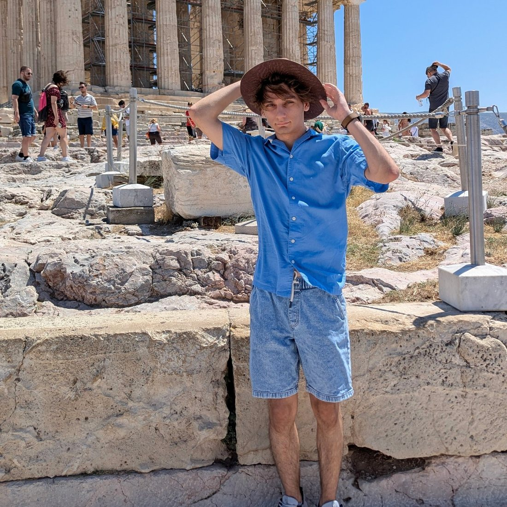
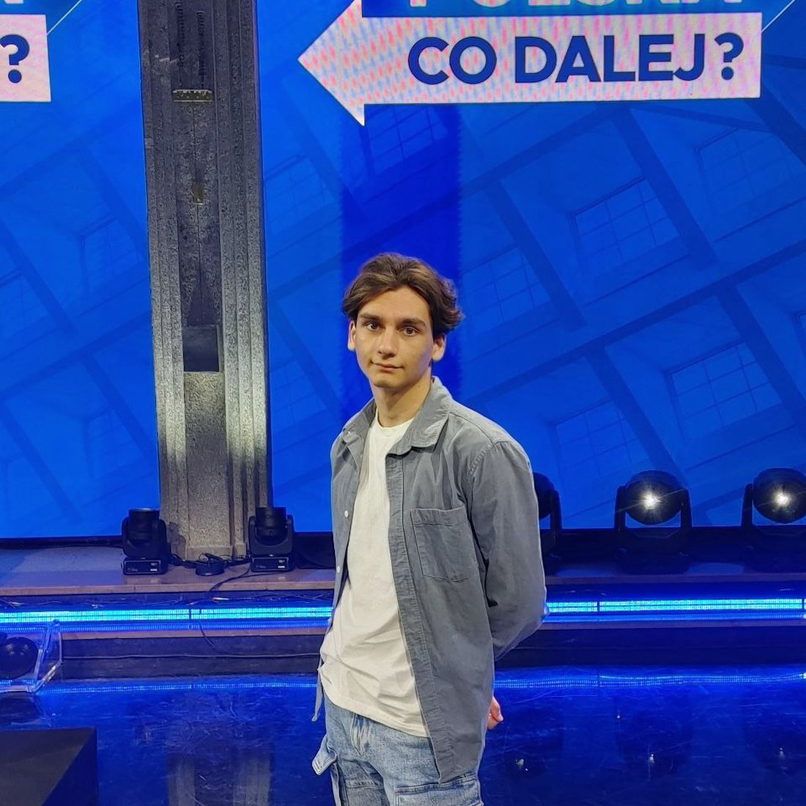
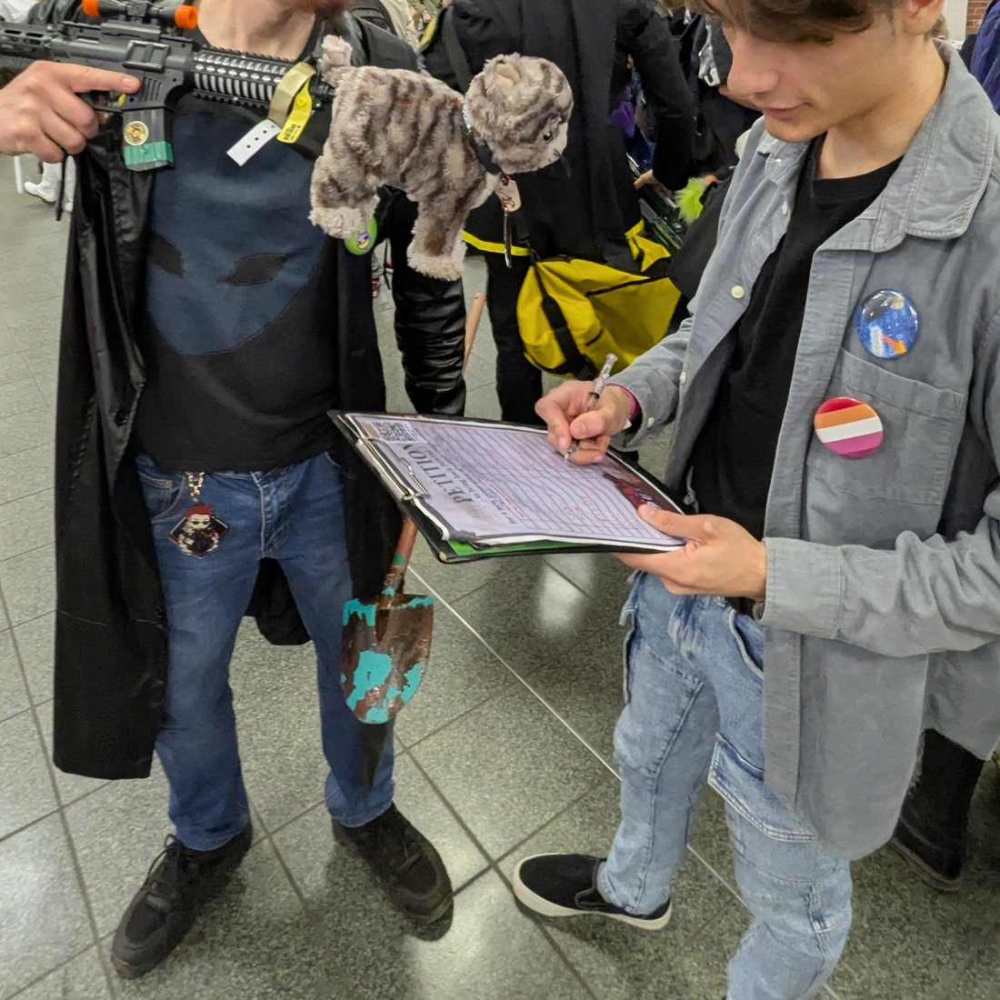

2026
I miejsce
Dostojewski, Hayek i wiedza, której nie da się wyrazić
Student Essay Competition, The Independent Institute
Wybrany spośród 57 prac z 13 krajów — jedyna praca z Polski.
Publikacja: The Independent Review, zima 2026/27.
Politologia · instytucje · eseje o regulacji, wiedzy i technologii
Ekonomia austriacka · wiedza rozproszona w koordynacji społecznej · teoria informacji · regulacja AI
Student trzeciego roku politologii na Uniwersytecie Warszawskim, laureat międzynarodowych konkursów esejów o regulacji, instytucjach i sztucznej inteligencji. Eseje publikuję w Polsce i za granicą; pracuję na przecięciu ekonomii, prawa i technologii — wiedza rozproszona, informacyjna treść cen i reguły, których będą potrzebować autonomiczne agenty.
Obok esejów piszę programy: Linda — lokalny detektor tekstu generowanego przez AI — i Linda Probe — lokalną wyszukiwarkę dokumentów z OCR. Oba działają wyłącznie na komputerze użytkownika.
Wydział Nauk Politycznych i Studiów Międzynarodowych
Politologia, studia licencjackie · październik 2024 – czerwiec 2027 (planowane)
Średnia ocen: 4,56 / 5,00
Wybrany spośród 57 prac z 13 krajów — jedyna praca z Polski.
Publikacja: The Independent Review, zima 2026/27.
341 prac z 64 krajów.
Zaproszenie do publikacji w Uniform Law Review.
Jeden z trzech zwycięskich tekstów, 14 krajów — jedyna praca z Polski.
Publikacja: International Affairs Forum, 2026, nr 48.
Praca o polityce sąsiedztwa i rozszerzenia Unii Europejskiej.
Profil autora i wszystkie artykuły na Mises.org
Autorski, lokalny detektor tekstu generowanego przez AI dla języka angielskiego, rosyjskiego i polskiego. Modele transformerowe i cechy stylometryczne; aplikacja na Windows, tekst nie opuszcza komputera.
github.com/Lendarixon/LindaLokalna wyszukiwarka dokumentów dla Windows z OCR i wyszukiwaniem semantycznym. Indeksowanie i wyszukiwanie wyłącznie na komputerze użytkownika.
github.com/Lendarixon/Linda-Probe

